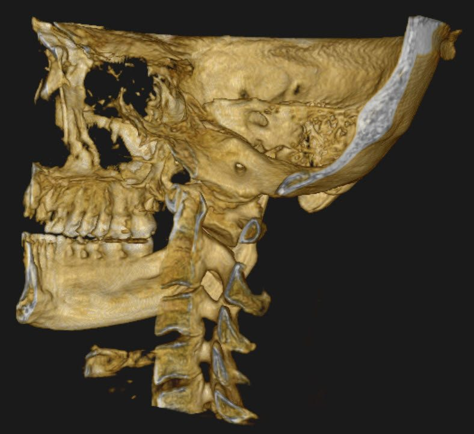
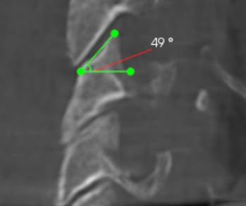
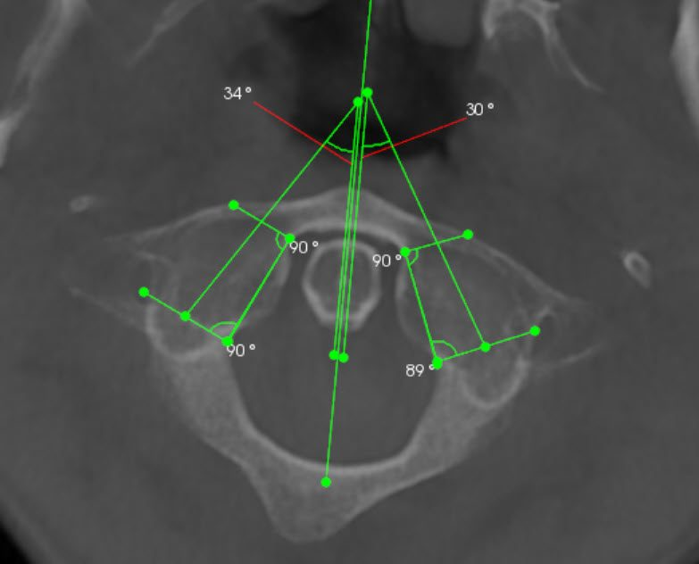
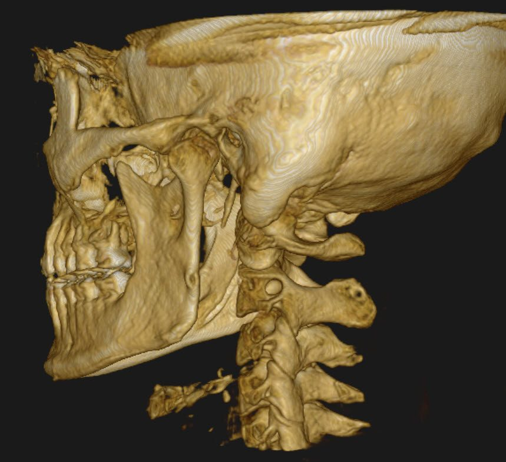
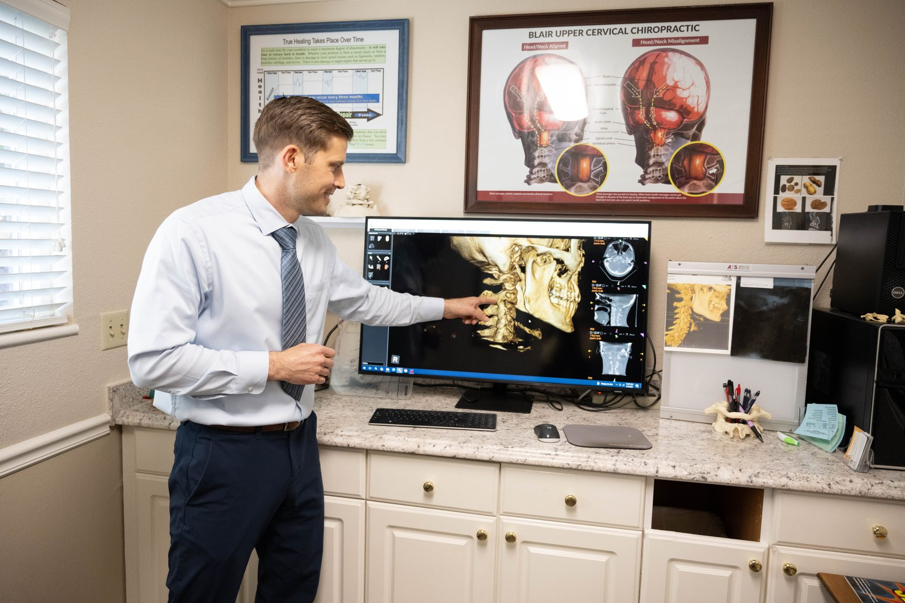
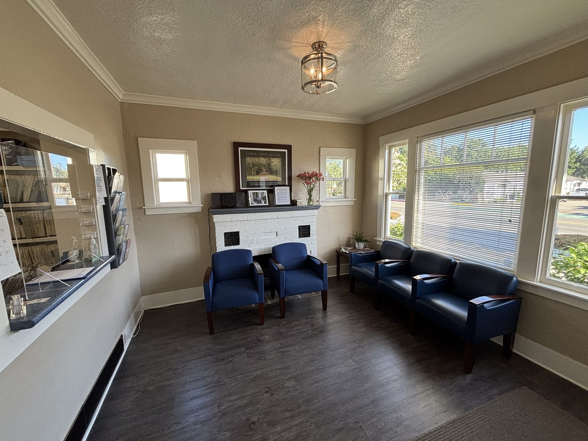
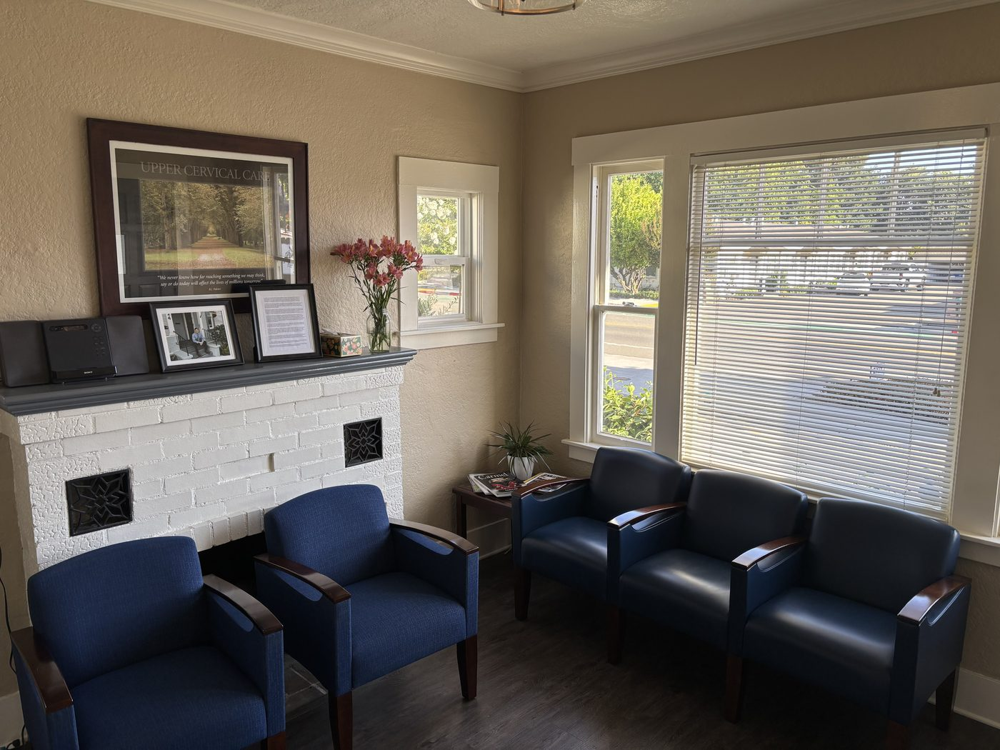
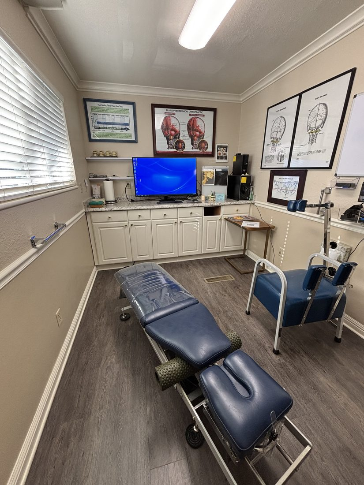
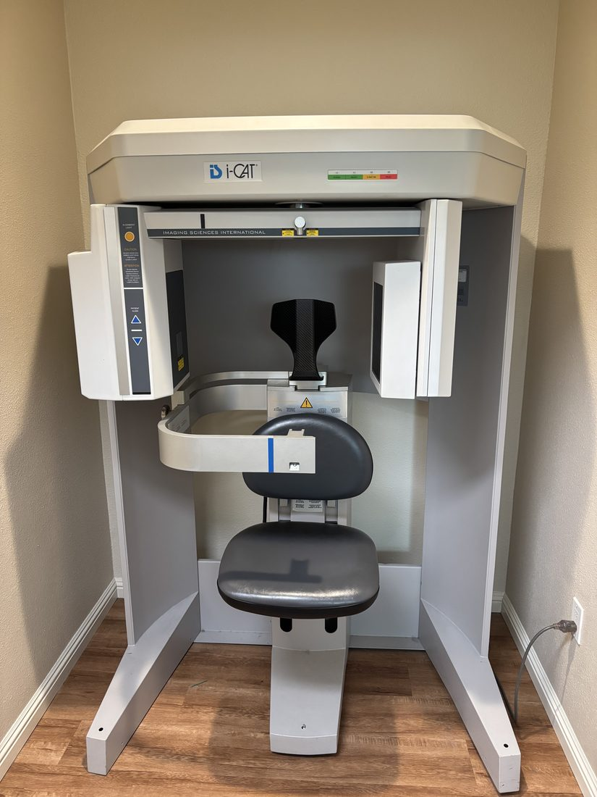
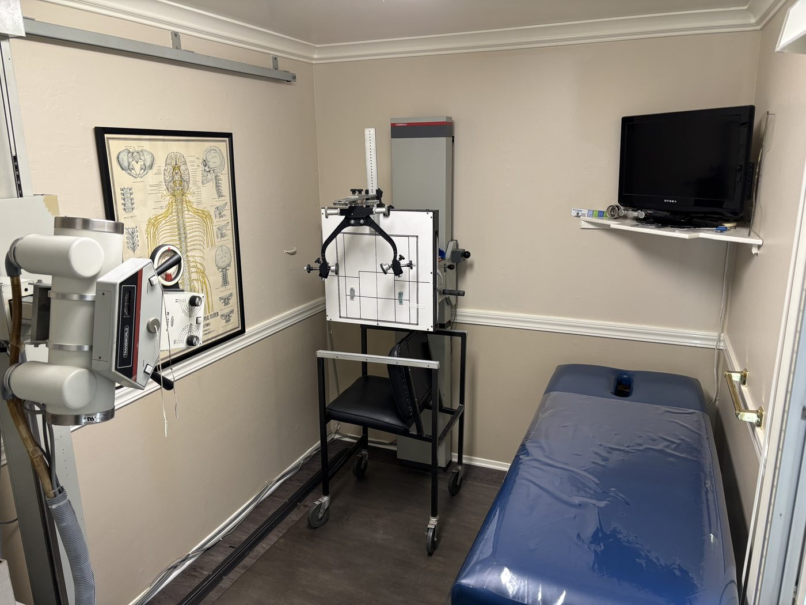

Upper Cervical Chiropractic in Pleasanton, CA
Gentle, Precise, Principled Chiropractic Care
We use advanced 3D imaging to measure the angles of your upper neck, then correct misalignments with as little as 4–8 lbs of pressure. No twisting, popping, or cracking of the neck.
Questions? Call 925-846-3357

3D CBCT imaging
Detailed images of your upper neck, so every correction is specific to you.
4–8 lbs of pressure
Gentle and precise, with no twisting, popping, or cracking.
Since 1975
Upper cervical care at this Pleasanton office for 50 years.


Our Approach
Care based on your own anatomy
Every spine is a little different. We use advanced 3D imaging (CBCT) to see the joints of your upper neck in detail and measure their exact angles.
Using those angles, we deliver a high velocity, low force adjustment specific to your biomechanics. We can correct a vertebral subluxation with as little as 4–8 lbs of pressure, without any twisting, popping, or cracking of the neck.
Our care is neurologically focused: the upper neck surrounds the brainstem, where messages between the brain and body pass through.

An atlas (C1) vertebra measured on CBCT. The left and right joints have different angles.
The Blair Technique
Nothing in nature is perfectly symmetrical
We practice a specialized upper cervical technique called Blair. What makes Blair unique from any other type of chiropractic is the concept of asymmetry.
Most x-ray analysis assumes the spine is symmetrical, so when it compares the left and right sides, it assumes the larger side has shifted forward. Dr. Blair studied over 3,000 vertebrae and found that around 80% had asymmetries.
He then developed a specialized series of x-rays to assess the joints of the upper neck for misalignment. This lets us measure the misaligned joint and deliver a gentle correction without twisting, popping, or cracking the neck.
Learn more at blairchiropractic.com.
Our History
50 years of upper cervical care in Pleasanton
Dr. Tom Forest started Forest Chiropractic Office in 1975 and served Pleasanton and the surrounding communities with the Blair technique for 50 years.
In 2025, Dr. Sean Marsh, who trained closely with Dr. Forest, took over the practice. It is now named Pleasanton Upper Cervical, LLC, at the same address, using the same technique.

Why Upper Cervical?
The upper neck is unlike any other part of the spine
The top two bones in the neck, the atlas (C1) and axis (C2), are responsible for around 50% of the head's nodding and turning. Being the most movable area of the spine also makes it the most susceptible to injury.
Misalignments in this region can impede blood flow to and from the brain, the flow of cerebrospinal fluid, and communication between the brain and body.
They can also shift the head's center of gravity, which can lead to postural distortions all the way down the spine.
Meet the Doctor
Dr. Sean Marsh, D.C.
Dr. Marsh was born and raised in British Columbia, Canada. He earned his B.S. in Biology in 2016, and he spent about eight years working in concrete and road maintenance, including driving a snowplow in the winters.
In 2018, he was rear-ended by a work truck. Over the next year he developed brain fog, headaches, ringing in his ears, trouble sleeping, and a constant pressure in his head.
In 2020 he moved to California to attend Life Chiropractic College West. He received his first upper cervical adjustment at this very office, then known as Forest Chiropractic Office, and his symptoms gradually improved. Upper cervical care became his passion.
In school, Dr. Marsh took the Blair Upper Cervical elective taught by Dr. Tom Forest and began practicing the technique in the school clinic. One of his first patients there had struggled with neck pain and headaches for seven years after a car accident. After a series of gentle adjustments and some time, those symptoms resolved.
He spent his last year and a half of school, and six months after graduation, training alongside Dr. Forest at Forest Chiropractic Office.
He traveled to Belgium to become certified in the Blair Technique and graduated Summa Cum Laude in 2023. Today he carries on the care and philosophy Dr. Forest established over 50 years in Pleasanton, with careful evaluations and individualized care for every patient. Looking ahead, he hopes to earn his Blair teaching certification to help other chiropractors bring this gentle approach to their own communities.
Upper cervical care uses the least amount of force for the greatest results.
How We Can Help
Common reasons patients visit
Patients commonly come to us with:
- Headaches & migraines
- Vertigo & dizziness
- Brain fog
- Neck pain
- Chronic pain
- Fatigue
- Dysautonomia
- Seizures
- Asthma
- Balance problems
- Tinnitus
- Posture problems
Not sure if we can help? Give us a call at 925-846-3357. We're happy to talk it through.
New Patients
What to expect
Every patient gets a thorough evaluation before their first adjustment, so we know exactly what's going on and how to help.
Discovery Day
- Consultation
- Neurological exam
- Orthopedic exam
- Imaging
Report & First Adjustment
- Review your images together
- Your game plan
- Your first adjustment
Check-ups
- Temperature scan
- Postural analysis
- Palpation
- 15-minute rest if adjusted

Our Office
Take a look inside






Patient Stories
What our patients say
★★★★★ 5.0 on Google
“Upper cervical chiropractic care has truly been life changing! I was living with chronic pain that affected my daily life, but being cared for here has brought full healing, in ways I never thought was possible. Their approach stands out as it is very precise, gentle, and specific to your unique needs. It's clear that Dr. Marsh genuinely cares about helping his patients experience healing.”
“I have been seeing Dr. Marsh for several months now and can't be happier with his care. He is a thoughtful, precise and highly skilled upper cervical chiropractor.”
“Came in very hopeful that these visits would help me with my brain fog, dizzy spells, and my posture.”
FAQ
Frequently asked questions
Will the adjustment crack or twist my neck?
No. Blair adjustments use as little as 4–8 lbs of pressure, with no twisting, popping, or cracking of the neck.
How is upper cervical care different from general chiropractic?
Upper cervical care focuses on the top two bones of the neck, the atlas and axis. With the Blair technique, we use 3D imaging to measure the angles of your own joints, since most people's vertebrae are not perfectly symmetrical. Your correction is based on those measurements.
Why do you take 3D images?
CBCT imaging lets us see the joints of your upper neck in detail and measure their exact angles. That's what allows us to make a gentle, specific correction instead of a one-size-fits-all adjustment.
What happens at my first visit?
Your first visit is Discovery Day: a consultation, neurological and orthopedic exams, and imaging. On your second visit, we review your images together, go over your game plan, and give your first adjustment.
What happens at check-ups?
At check-ups we do a temperature scan, postural analysis, and palpation. If you're adjusted that day, you'll rest for 15 minutes afterward.
Do you accept insurance?
No, we do not accept insurance. Please call us at 925-846-3357 with any questions.
Is this still Dr. Forest's office?
Yes, it's the same office at 4224 Stanley Blvd. Dr. Forest started the practice in 1975, and Dr. Marsh, who trained with him, took it over in 2025. It's now called Pleasanton Upper Cervical, LLC.
Visit Us
Request an appointment
Call us or send a request below, and our front desk will get back to you. We serve Pleasanton, Dublin, San Ramon, Livermore, Walnut Creek, and the rest of the Tri-Valley.
Contact
FrontDesk@PleasantonUpperCervical.com
4224 Stanley Blvd
Pleasanton, CA 94566
Office Hours
| Monday | 9:00am – 6:00pm |
| Tuesday | 9:00am – 6:00pm |
| Wednesday | Closed |
| Thursday | 9:00am – 6:00pm |
| Friday | 9:00am – 6:00pm |
| Saturday | 8:00am – 12:00pm |
| Sunday | Closed |